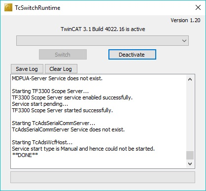
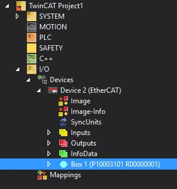
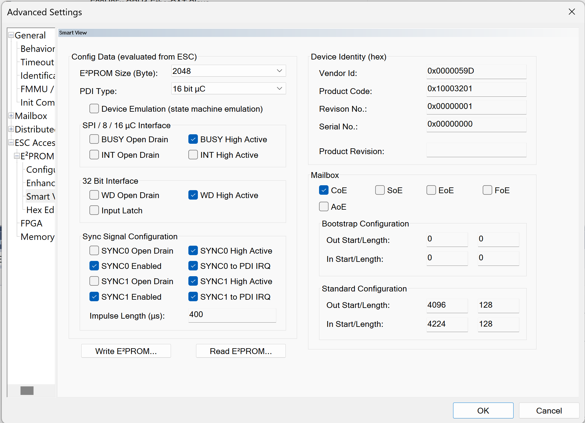
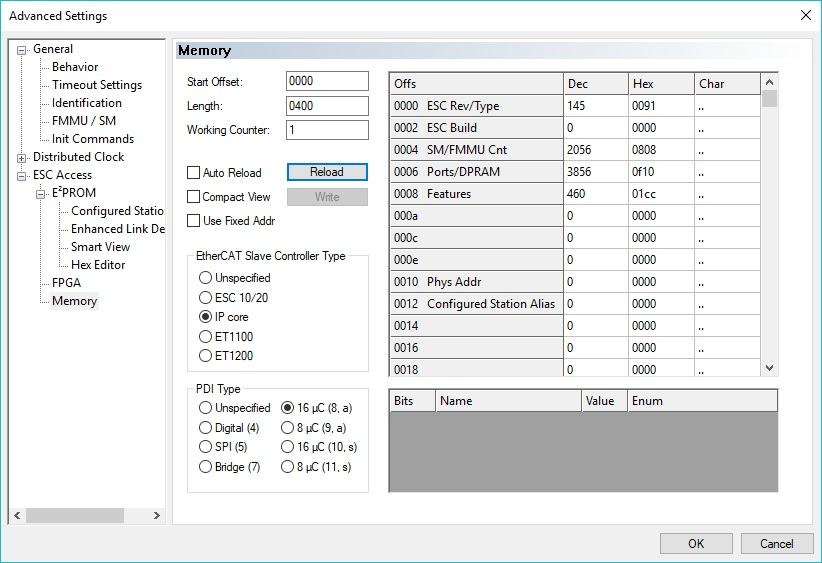

Example External Connections
| Example | External Connections |
| CPU1 PDI HAL Test Example | Mini USB connection between controlCARD and computer Ethernet cable connected to controlCARD RJ45 Port 0 and to computer |
Setup TwinCAT
- Optional: Install Microsoft Visual Studio. This isn’t required since TwinCAT will install a Visual Studio shell if no Visual Studio installation is found.
- Download and install Microsoft Visual Studio
- TwinCAT supports integration into Visual Studio 2010/2012/2013/2015/2017
- Download and install TwinCAT3 from the Beckhoff
- Follow the left sidebar to Download->Software->TwinCAT 3->TE1xxx | Engineering and select the software product TwinCAT 3.1 eXtended Automation Engineering (XAE)
- Once installation is complete, verify that the TwinCAT Runtime is active
- Check that the TwinCAT Config Mode icon is shown in the Windows notification panel. Right click on this icon and select Tools->TwinCAT Switch Runtime. From the TcSwitchRuntime window, verify that it is active. When active, it will only provide the option to Deactivate. Don’t Deactivate!
- If the icon isn’t present, then locate the TwinCAT Runtime executable from the file system. (Default installation location is typically: C:/TwinCAT/TcSwitchRuntime)

TcSwitchRuntime Window Activated
- Start up Visual Studio with TwinCAT using one of the following methods:
- Recommended: Right click the TwinCAT Config Mode icon from the Windows notification panel and select TwinCAT XAE
- Use installed desktop icon: TwinCAT XAE
- Use installed Start Menu icon under Beckhoff folder: TwinCAT XAE
- Once Visual Studio running, verify that the main toolbar has options TwinCAT and PLC shown. If these aren’t present, then the TwinCAT Switch Runtime isn’t active.
- Within Visual Studio, create a new EtherCAT project. Select File -> New -> Project and under templates select TwinCAT Projects then TwinCAT XAE Project (XML format). Fill in a name and click OK.
- Now that the project is created, verify that a realtime Ethernet adapter is installed.
- In Visual Studio, select the TwinCAT menu from the main toolbar and select Show Realtime Ethernet Compatible Devices.
- In the popup window, under Installed and ready to use devices(realtime capable) category, if no connections are shown, select one from the list of Compatible devices and click Install.
- TwinCAT setup is complete.
Scanning for EtherCAT SubDevices via TwinCAT
- Open the TwinCAT project created via Setup TwinCAT.
- Verify that the controlCARD is running the HAL example code and that the development computer (running TwinCAT) is connected via an Ethernet cable to the port 0 connection on the controlCARD.
- Port 0 is the top Ethernet port on the side of the controlCARD with two Ethernet connections.
- In Visual Studio on the left side solution explorer, expand the Project, then expand I/O
- Right click on Devices and select Scan
- A dialog will popup stating that Not all types of devices can be found automatically. Click OK.
- Once scanning is complete, a popup window will appear. The following options may appear:
- A popup stating that 1 new I/O devices found where the device is Device 2 (EtherCAT Automation Protocol). This or any other device numbers besides Device 1 is correct, click OK.
- A popup stating that no devices have been found or stating that 1 new I/O devices found where the device is Device 1 (EtherCAT Automation Protocol). This means some setup is incorrect. Verify that the example is running on the device (or at least has gone through the GPIO setup and reset of the EtherCAT IP).
- After clicking OK, another popup will ask to Scan for boxes. Click Yes.
- After clicking YES, another popup will ask to Activate Free Run. Click Yes.
- In the solution explorer on the left, under devices you should see Device 2 (EtherCAT). Under that, there will be a Box #. This Box is the controlCARD ESC.

TwinCAT Solution Explorer
- The EtherCAT MainDevice communication is now setup with the SubordinateDevice device.
Program ControlCard EEPROM
Verify first that TwinCAT has discovered the ESC.
- In the Visual Studio solution explorer, double click on Box # under Device 2 (EtherCAT).
- The TwinCAT project window should be open to the right of the solution explorer and have some tabs such as General, EtherCAT, etc
- Select the EtherCAT tab and then click on Advanced Settings
- In the new window, expand the ESC Access menu, then expand the E2PROM menu. Click on Smart View
- If running a HAL PDI test Example, follow these steps to begin programming the EEPROM. Otherwise, skip to the next step.
- Click on Write E2PROM and select Browse. Browse to c29_sdk\mcu_sdk_f29h85x\examples\communication\Ethercat\eeprom and select f29h85x_cpu1_pdi_test_app.bin if running the CPU1 example. Click OK.
- Note
- These BIN files only program the required first 15 bytes of EEPROM and should only be used with the HAL examples.
- If running an Echoback example, follow these steps to begin programming the EEPROM.
- Click on Write E2PROM and expand the Texas Instruments Incorporated menu within the Available EEPROM Descriptions window.
- Expand TI C29xx SubordinateDevices and select F29H85x CPU1 EtherCAT SubDevice. Click OK.
- Visual Studio will indicate that the EEPROM is being programmed. When it completes, if the Smart View doesn’t automatically update with the new contents, you can select Read E2PROM to read back the newly programmed values.
- The Product Code for CPU1 is 0x10003201

TwinCAT EEPROM Window
Use TwinCAT Memory Window
Verify first that TwinCAT has discovered the ESC.
- In the Visual Studio solution explorer, double click on Box #.
- The TwinCAT project window should be open and have some tabs such as General, EtherCAT, etc
- Select the EtherCAT tab and then click on Advanced Settings
- In the new window, expand the ESC Access menu, then select Memory. This is the connected ESC memory.

TwinCAT Memory Window
- Adjust the Start Offset and Length as necessary to view the ESC registers or RAM. Note that these are byte offsets.
- ESC registers are 0x0 to 0xFFF
- ESC RAM is 0x1000 to 0x4FFF
- You can select Reload once the offsets are changed or if the ESC is changing memory that needs to be reflected here on the MainDevice side.
- Additionally, the memory values can be manipulated through this window and can be applied once the Write button is selected. Such changes can be confirmed by viewing the same memory through the CCS memory browser.
Generate SubordinateDevice Stack Code
These are steps to generate SubordinateDevice stack code without an application.
- Install the SSC tool V5.13
- Open the SSC tool and a New Project dialog box will open. Select Import and locate the f29h85x_ssc_config.xml. Then click Open. SSC configuration xml file is not required for f29h85x_cpu1_pdi_hal_test_app example.
- Use the Custom drop-down menu to select the corresponding project.
- Click Yes when the pop up window asks about requiring external files to proceed.
- Save the SSC project.
- Within SSC tool, go to Project -> Create new SubordinateDevice Files
- You can leave both source and ESI directory paths as default
- Click Start and then OK.
 1.9.1
1.9.1